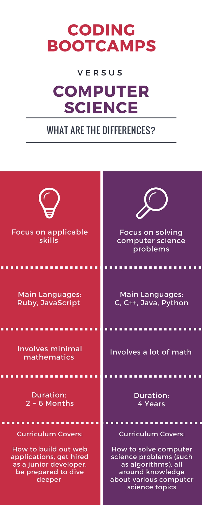

Joining a coding bootcamp was the best choice I made in my college career — and it could be the best choice you make as well, especially if you have never coded before. Coding bootcamps are a fairly new thing — they are intensive training schools where students can learn programming to a professional level in an extremely short period of time (12 ~ 15 weeks). By omitting computer science topics that aren’t really used in actual work and focusing solely on the practical skills that are used most in the industry, bootcamps are able to teach programming in an extremely short period of time. These coding bootcamps are mostly targeted towards adults who are looking for a career change or want to start their own businesses.
I was an outlier, joining an online coding bootcamp called theFirehoseProject as a college junior. Despite the fact that coding bootcamps usually aren’t targeted towards college undergraduates like me, I’ve found that going through the bootcamp as an undergrad has been one of the most rewarding experiences in my college life. Here’s why:
How are coding bootcamps different from traditional Computer Science courses? This is a question that gets asked a lot, and is a question that I was asking before I joined. Here are my impressions based on my own experiences of experiencing both.
Coding bootcamps focus greatly on applicable skills and modern technologies being used by the industry. Many focus on teaching Ruby, a modern programming language, which is also a great first language since it is a “programmer friendly” language and is relatively easier to grasp compared to a language like C or Java.
On the other hand, many computer science classes start with relatively difficult languages like C or Java. These languages might be essential to learn as a coder, but they tend to be the difficult for beginners to grasp, and many people quit coding at this point. I was one of these people, when I tried learning programming with CS50, a famous online course offered by Harvard. The course itself was fantastic and high quality, but the programming language I was taught was C. Although this might be pedagogically better as it forces you to learn the intricacies of programming, it might also scare beginners away, giving the false impression that learning a programming language is difficult to learn, when in fact, it isn’t.
Another point to make is that a lot of intermediate to advanced computer science courses require some mathematics and thus have a higher barrier to entry. Mathematical thinking is important, but is only required in a limited variety of programming jobs. Coding bootcamps do a great job of taking out a lot of the unnecessary math for developing web applications in their curriculum, thus creating a low barrier to entry.
Since the objective of bootcamps are to train total newbie programmers into professionals in a short period of time, the top bootcamps do a great job in teaching things in a way that a complete beginner can understand. The curriculum and lesson style at theFirehoseProject was indeed, extremely easy to understand as a beginner. After 7 weeks upon training with theFirehoseProject, I was able to land a job as a web developer at a local start up. With that, I was able to pay off most of my bootcamp tuition fees, so already it was a great investment.

Being able to code opened up a tremendous amount of opportunities on and off campus.
In my 8th week, I participated in a student hackathon called HackNC (hackathons are typically events where teams try to hack together something cool within a 24 ~ 48 hour timeframe). I worked with a team of 2 other developers and 1 business student, and we were able to hack together a minimally viable product after working 24 hours straight. I was in charge of doing a lot of the front end work which I was already used to doing from the curriculum at theFirehoseProject. We ended up receiving 3 prizes at the hackathon along with offers from multiple companies in my first hackathon. The team that I worked with at that event are still buddies and it was overall a great experience that was made possible because I joined a coding bootcamp.
Outside of school, being able to code also led me to gaining some work experience. I saw a Facebook post by a person who wanted to build a web application for their new business idea. Plus, they were willing to pay for it. I was only in my 7th week, but figured I’d at least give it a try. Since I had already built a couple of web applications, I told them that despite being relatively a beginner at coding, I knew how to build basic web applications and could work with them to build out their idea for cheaper. They also liked the idea of giving a college kid some experience, as well as the costs that they were able to cut, and so they hired me (that gig alone paid for my tuition at the bootcamp).
Well you might be thinking by now, if you’re in college and wanted to learn how to code, why didn’t you just take Computer Science courses in the first place?
The answer to this question is simple: I thought I wasn’t smart enough to learn how to code.
The common misconception is that coding is a super difficult skill to learn. It’s not. You just have to have the right support system, motivation, and resources to overcome the initial barriers that you might face when starting out. I learned that through joining a bootcamp.
If I hadn’t joined a bootcamp, I wouldn’t have decided to not only take computer science courses, but also major in it as well. Although being able to code was a dream for me, I tried and I failed with my initial dab at it with CS50, the Harvard CS course I mentioned before. The course taught in C and immediately went into sorting algorithms. This gave me the initial impression that learning to program was hard.
But the truth is, learning how to program isn’t as hard as you might think. You just need to start with a programmer friendly language with an awesome support system and friendly community. That’s what bootcamps are able to provide.
So if you’re a college student and you’ve been wanting to learn programming but just thought it wasn’t for you, take a look at some top coding bootcamps (some bootcamps are apparently not worth the money so make sure to look at the top schools). You might be surprised to find that anyone can learn how to code given the right resources. Once you start learning how to code, you’ll see new opportunities open up to you that you’ve never realized before.
So if you’re interested in learning how to code but don’t want to get into the computer science topics, then joining a bootcamp might be the right choice for you.
theFirehoseProject — A reasonably priced online coding bootcamp ($4,000) with an extremely helpful team and supporting community with a focus on Ruby on Rails. Weekly mentor sessions enable you to really grow as a developer. It’s perfect for people that don’t want to quit their jobs and spend a ton of money. I personally recommend it for most people. They let me work here as an intern and I can tell you that the team behind the bootcamp are super honest and humble people who really care about their students.
HackReactor — This bootcamp costs $18,000 to enroll, but it’s supposed to be well worth the money. If you are looking to go to a top notch bootcamp and are willing to pay the money, HackReactor is probably the bootcamp for you.
Fullstack Academy — Also another immersive bootcamp like HackReactor. Their student projects are super impressive, which is always a great sign.
Makersquare — Similar to HackReactor and Fullstack Academy. Full time coding bootcamps with a focus on JavaScript frameworks. They claim to have high rates of graduates getting jobs.